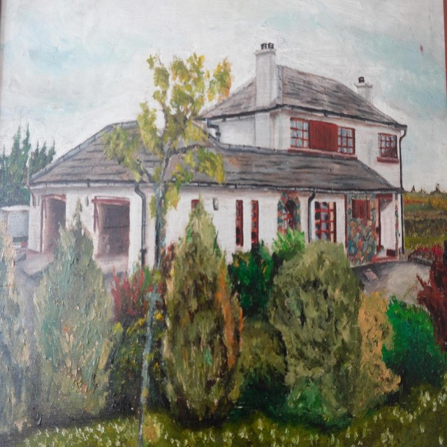

Spotlight track
Listen on SpotifyOfficial artist site
Music, shows and stories
Andrew's songs sit close to the listener: direct vocals, warm acoustic textures and the kind of storytelling that belongs in the room.
Featured release

Spotlight track
Listen on SpotifyFrom record to room
Live footage and acoustic takes keep the focus on the voice, the guitar and the connection with the audience.
Watch
A stripped-back performance of White Feather, led by the song and the room around it.
Live
Store
Photos